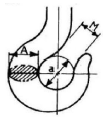
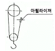
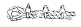
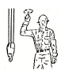

천장크레인운전기능사 (2015-10-10 기출문제)
1과목: 임의 구분
1. 쇠밧줄 직경(d)과 드럼 직경(D)의 비(D/d)는?
- 10
- 15
- 20〜25
- 26〜30
(정답률: 83%)

2. 전자 접촉기의 개폐작동 불량 원인과 가장 거리가 먼 것은?
- 전압강하 과다
- 코일 단선
- 접점의 과다 마모
- 전동기의 초고속 운전
(정답률: 76%)
3. 주행 차륜 플랜지는 두께의 몇 % 이상 마모와 수직에서 몇 도(°) 이상의 변형이 생기면 교환 하는가?
- 40%, 20°
- 40%, 10°
- 50%, 10°
- 50%, 20°
(정답률: 63%)
4. 훅을 교환해야 할 상태를 육안으로 가장 간단하고 쉽게 확인 할 수 있는 것은?

- 그림에서 M의 치수가 a의 치수와 같아진 것
- A부분의 균열을 확인하기 위하여 비파괴 검사한 것
- 그림에서 훅의 인장응력이 변화된 것
- 훅의 A의 치수가 원 치수의 20% 이상 마모인 것
(정답률: 72%)
5. 미끄럼 베어링의 종류가 아닌 것은?
- 일체형
- 분할형
- 스러스트형
- 부시형
(정답률: 40%)
6. 전자식 마그넷 브레이크(magnet brake)의 라이닝 두께가 25% 감소한 경우 가장 적합한 조치 방법은?
- 라이닝을 교환한다.
- 브레이크 드럼 지름을 크게 한다.
- 스트로크를 조정한다.
- 특별한 조치를 하지 않아도 된다.
(정답률: 67%)
7. 천장크레인에서 버퍼 스톱퍼(Buffer Stopper) 란?
- 주행차륜에 부착하여 과속을 방지하는 장치
- 주행이나 횡행 시 충돌했을 때 충격을 완화시켜 주는 장치
- 권상장치의 과권방지용 장치
- 권하 시 너무 내리는 것을 방지하기 위하여 드럼에 부착하는 장치
(정답률: 80%)
8. 천장크레인에서 주행레일의 진직도는 전 주행길이에 걸쳐 최대 얼마 이내이어야 하는가?
- 20㎜
- 10㎜
- 2㎜
- 5㎜
(정답률: 55%)
9. 정전 또는 전압이 비정상적으로 저하되었을 때 스위치가 자동적으로 열리는 것은?
- 역상보호계진기
- 무전압보호장치
- 타임릴레이
- 나이프스위치
(정답률: 68%)
10. 훅의 재질로 적당한 것은?
- 주철
- 기계구조용 탄소강
- 합금 공구강
- 구상흑연 주철
(정답률: 80%)
11. 천장크레인의 비상정지용 누름버튼에 대한 설명 중 틀린 것은?
- 누름버튼을 누르면 작동중인 동력이 차단된다.
- 누름버튼의 머리 부분은 적색이다.
- 누름버튼의 머리 부분은 돌출되어 있다.
- 누름버튼은 작동 후 10초 후에 원래상태로 복귀한다.
(정답률: 88%)
12. 정격하중이 20000kgf인 천장크레인의 폭(Hook)은 파괴 하중이 최소한 몇 kgf 이상인 것을 사용해야 하는가?
- 40000kgf
- 60000kgf
- 80000kgf
- 100000kgf
(정답률: 60%)
13. 콘텍트 시그먼트(contact segment)와 핑거(finger)가 접촉하여 직접 전동기를 작동 시키는 방식은?
- 유니버셜 제어기
- 캠형 제어기
- 드럼형 제어기
- 직렬 제어기
(정답률: 58%)
14. 주행용 트롤리선은 늘어남과 하중을 지지하기 위해 몇 m 간격 마다 애자로 지지하여야 하는가?
- 3m
- 6m
- 9m
- 12m
(정답률: 61%)
15. 천장크레인 거더의 중량을 경감할 수 있으나 휨이 가장 큰 거더는?
- I빔 거더
- 강관 거더
- 트러스 거더
- 박스 거더
(정답률: 52%)
16. 천장크레인의 와이어 드럼의 직경은 어떻게 정하는 것이 가장 좋은가?
- 드럼의 직경은 사용할 와이어로프의 직경보다 20배 이상이 적절하다.
- 드럼의 직경은 사용할 와이어로프의 소선 직경보다 300배 이상이 적절하다.
- 드럼의 직경은 Crab의 크기에 비례해서 정하는 것이 좋다.
- 드럼의 직경은 Hook의 크기에 비례해서 정하는 것이 좋다.
(정답률: 71%)
17. 기계식 과부하 방지장치에 대한 설명으로 옳은 것은?
- 구조가 간단하여 보수가 쉽다.
- 완전개방형 구조이다.
- 이동형 보호장치로 취급이 간편하다.
- 별도의 동작 전원이 필요하다.
(정답률: 56%)
18. 도유기와 리미트 스위치에 대한 설명 중 틀린 것은?
- 차륜 도유기는 차륜 플랜지 또는 레일 측면에 소량의 오일을 자동으로 도유하는 기기이다.
- 차륜 도유기의 오일탱크는 도유기 몸체보다 상부에 위치 한다.
- 상용 리미트 스위치가 하한선에서 작동했을 때 권상훅의 위치는 보통 크래브 하단으로부터 보통 0.5m 정도이다.
- 중추식 리미트 스위치는 비상용으로 사용한다.
(정답률: 49%)
19. 천장크레인의 운동속도에 관한 사항 중 틀린 것은?
- 권상장치는 양정이 짧은 것이 느리고 긴 것이 빠르다.
- 권상장치는 하중이 가벼우면 빠르고 무거울수록 저속으로 한다.
- 횡행장치는 스팬의 길이에 관계없이 200m/min 정도의 속도를 채용한다.
- 주행속도는 작업능력에 큰 관계가 없으므로 가능한 저속으로 한다.
(정답률: 47%)
20. 다음 중 주행 제동용으로 주로 사용되는 브레이크는?
- 마그네틱 오일 브레이크(magnetic oil brake)
- 에디 커런트 브레이크(eddy current brake)
- 오일 디스크 브레이크(센 disk brake)
- 스피드 컨트롤 브레이크(speed control brake)
(정답률: 62%)
2과목: 임의 구분
21. 3상 권선형 유도 전동기의 전류 제한 및 속도조정 목적으로 사용되는 것은?
- 브러시(brush)
- 2차 저항기
- 회전자(rotor)
- 슬립링(slip ring)
(정답률: 76%)
22. 주기적인 정비를 위한 예비품목 중 가장 거리가 먼 것은?
- 모터 브러시
- 제어반(판넬)
- 콜렉타 브러시
- 제어기 접점
(정답률: 73%)
23. 궤도륜 사이에 있는 전동체가 굴림운동을 하며 볼, 원통, 테이퍼 롤러 등의 종류로 분류할 수 있는 베어링은?
- 스러스트 베어링
- 점접촉 베어링
- 구름 베어링
- 미끄럼 베어링
(정답률: 63%)
24. 크레인 점검 작업 시 유의사항으로 틀린 것은?
- 점검작업을 할 때는 "점검중" 등의 위험 표지를 설치한다.
- 정지하여 점검 작업을 할 때는 동력원 스위치를 끄고 한다.
- 점검작업을 할 때는 필요한 안전 보호구를 착용한다.
- 동일 주행로상에서 다른 크레인의 주행을 제한하면 곤란하다.
(정답률: 84%)
25. 권상하중 50톤, 권상속도 1.5m/min인 천장크레인의 권상 전동기 출력은 약 얼마인가? (단, 권상 전동기의 효율은 70%이다.)
- 12.2kW
- 13.0kW
- 17.5kW
- 18.5kW
(정답률: 62%)
26. 기어에서 소음이 발생하는 원인이 아닌 것은?
- 백래시 (backlash) 가 너무 적을 경우
- 기어축의 평행도가 나쁠 경우
- 치면에 흠이 있거나 다듬질의 정도가 나쁠 경우
- 오일을 과다하게 급유했을 경우
(정답률: 85%)
27. 베어링이 고착되는 경우와 가장 거리가 먼 것은?
- 급유가 불충분한 경우
- 급유 오일의 선정이 잘못된 경우
- 과부하로 베어링의 유막이 파괴된 경우
- 저속으로 회전하는 경우
(정답률: 76%)
28. 주행 집전장치 (pantograph)의 집전자(Collector shoe)에 주로 사용되는 브러시로 맞는 것은?
- 플라스틱 브러시
- 카본 브러시
- 은 접점 브러시
- 알루미늄 브러시
(정답률: 72%)
29. 감속기에 대한 설명 중 틀린 것은?
- 감속기의 제1단 기어는 10% 정도 마모되었을 때 교환하는 것이 좋다.
- 기어 케이스 내에 공급하는 오일은 보통 2000시간마다 교환한다.
- 축은 회전축과 전동축으로 구분된다.
- 커플링은 축이음 장치이다.
(정답률: 42%)
30. 천장크레인용 전동기에서 직류전동기로 가장 많이 사용되는 것은?
- 직권전동기
- 분권전동기
- 화동복권전동기
- 농형유도전동기
(정답률: 62%)
31. 입력전압이 440V, 60Hz인 3상 유도전동기에서 극수가 4극, 회전자 속도가 1760rpm일 때 이 전동기의 슬립율은 약 몇 % 인가?
- 2.2
- 4.3
- 13.2
- 20.3
(정답률: 35%)
32. 원활한 운전작업을 하기 위한 방법 중 틀린 것은?
- 운전 중 운전자는 항상 기계 각부의 이상 음향, 이상진동에 주의한다.
- 정지 상태에서 출발 시 갑자기 전속력으로 운전해서는 안 된다.
- 운전자는 물건을 들고 지나온 경로를 되돌아보며 운전을 올바르게 했느냐를 항상 반성하며 운전해야 한다.
- 작업종료 후에는 꼭 소정의 위치에 정지시킨 후 전원을 OFF 한다.
(정답률: 79%)
33. 그리스를 주입하면 안 되는 곳은?
- 베어링
- 브레이크 라이닝
- 감속기 기어
- 커플링 취부시 모터축 사이
(정답률: 68%)
34. 트롤리(Trolley) 동선의 좌·우 고저차는 기준면에서 몇 ㎜ 이하를 유지하여야 하는가?
- ±2
- ±4
- ±6
- ±8
(정답률: 55%)
35. 키(Key)의 재료 성질 중 적당한 것은?
- 축재료보다 연한 강철재
- 축재료보다 강한 강철재
- 마찰계수가 작아 미끄러운 것
- 축재료보다 강한 주철재
(정답률: 70%)
36. 레인을 이용한 운반작업에 있어서 고려해야 사항으로 알맞지 않은 것은?
- 한 번에 많은 하물을 운반하여 운반 횟수를 줄인다.
- 이동하는 거리를 짧게 한다.
- 될 수 있는 한 전용의 줄걸이 용구를 사용한다.
- 위험 범위를 명확히 한다,
(정답률: 86%)
37. 천장크레인 작업에서 안전담당자의 임무가 아닌 것은?
- 작업방법과 근로자의 배치를 결정하고 작업을 지휘
- 재료의 결함 유무 또는 기구 및 공구의 기능을 점검하고 불량품을 제거
- 작업 중 안전대와 안전모의 착용상황을 감시
- 작업을 지휘하는 자를 선임하여 그에 의하여 작업 실시 하도록 조치
(정답률: 58%)
38. 스파크(spark) 발생 비율에 대한 사항 중 틀린 것은?
- 접촉면에 요철이 심하면 스파크가 심하다.
- 전로를 닫을 때보다 열(off)때가 스파크가 많다.
- 접촉점 간에 전압이 클수록 스파크가 많다.
- 교류보다 직류가 스파크가 작다.
(정답률: 72%)
39. 방폭구조로 된 전기설비의 구비조건이 아닌 것은?
- 시건장치를 할 것
- 접지를 할 것
- 환기가 잘되도록 할 것
- 퓨즈를 사용할 것
(정답률: 66%)
40. 크레인 운전조작의 주의사항에 관한 설명으로 틀린 것은?
- 화물이 지면에서 떨어지는 순간의 권상은 빠른 속도로 권상한다.
- 줄걸이 작업 위치까지 훅을 권하시킬 때에는 필요 이상으로 권하시키지 않는다.
- 화물의 중심 위에 훅의 중심이 오도록 횡행, 주행 조작 등에 의해 위치를 결정한다.
- 화물위치에 크레인을 이동시킬 경우 훅을 지상의 설비 등에 부딪치지 않을 높이까지 권상하여 크레인을 수평 이동시킨다.
(정답률: 83%)
3과목: 임의 구분
41. 지브크레인에서 줄걸이 작업자의 위치는? (단, 작업반경 밖임)
- 기복, 선회방향의 15°의 위치
- 기복, 선회방향의 25°의 위치
- 기복, 선회방향의 35°의 위치
- 기복, 선회방향의 45°의 위치
(정답률: 52%)
42. 힘의 3요소는?
- 힘의 크기, 힘의 무게, 힘의 단위
- 힘의 방향, 힘의 작용점, 힘의 크기
- 힘의 크기, 힘의 방향, 힘의 강도
- 힘의 무게, 힘의 거리, 힘의 작용점
(정답률: 63%)
43. 줄걸이 방법 중 훅걸이의 종류가 아닌 것은?
- 짝감기 걸이
- 어깨 걸이
- 이중 걸이
- 짝감아 걸이
(정답률: 41%)
44. 와이어 손상의 분류에 대한 설명으로 틀린 것은?
- 와이어는 사용 중 시브 및 드럼 등의 접촉에 의해 마모가 생기는데, 이때 직경 감소가 7% 시 교환한다.
- 사용 중 소선의 단선이 전체 소선수의 50%가 단선이 되면 교환한다.
- 과하중을 들어 올릴 경우 내·외층의 소선이 맞부딪치게 되어 피로현상을 일으키게 된다.
- 열의 영향으로 강도가 저하되는데 이때 심강이 철심일 경우 300℃까지 사용이 가능하다.
(정답률: 54%)
45. 24본신 6꼬임의 와이어로프를 사용할 경우 권상용 드럼과 와이어로프 지름의 비는 최소 얼마 이상으로 해야 하는가?
- 20
- 30
- 40
- 50
(정답률: 46%)
46. 크레인 권상장치에 절단하중 37.7ton이 되는 ø25㎜인 와이어로프가 드럼에서 2줄 내려와 설치되어 있다. 이 로프로 약 몇 톤까지 사용 가능한가? (단, 안전율은 6이다.)

- 6
- 12
- 20
- 25
(정답률: 49%)
47. 와이어로프의 쐐기 고정법온?

(정답률: 52%)
48. 건설현장에서 와이어로프 방법이 아닌 것은?
- 파단 상태의 점검
- 제작방법 점검
- 형상변형 점검
- 마모 및 부식상태 점검
(정답률: 77%)
49. 그림은 작업자가 크레인 운전자에게 어떻게 운전하라는 수신호인가?

- 훅을 돌린다.
- 훅을 올린다.
- 훅을 내린다.
- 훅을 정지시킨다.
(정답률: 79%)
50. 와이어로프의 안전계수가 5이고, 절단하중이 20000kgf 일 때 안전하중은?
- 6000kgf
- 5000kgf
- 4000kgf
- 2000kgf
(정답률: 71%)
51. 다음 중 일반적으로 장갑을 끼고 작업할 경우 안전상 가장 적합하지 않은 작업은
- 전기용접 작업
- 타이어교체 작업
- 건설기계운전 작업
- 선반 등의 절삭가공 작업
(정답률: 68%)
52. 다음 중 산소결핍의 우려가 있는 장소에서 착용하여야 하는 마스크의 종류는?
- 방독 마스크
- 방진 마스크
- 송기 마스크
- 가스 마스크
(정답률: 71%)
53. 다음 중 전기설비 화제 시 가장 적합하지 않은 소화기는?
- 포말 소화기
- 이산화탄소 소화기
- 무상강화액 소화기
- 할로겐화합물 소화기
(정답률: 48%)
54. 크레인 인양작업 시 안전사항으로 적합하지 않은 것은?
- 신호자는 원칙적으로 1인이다.
- 신호자는 크레인 운전자가 볼 수 있는 안전한 위치에서 행한다.
- 2인 이상의 고리 걸이 작업 시에는 상호 간에 소리를 내면서 행한다.
- 권상 작업 시 지면에 있는 보조자는 와이어로프를 손으로 꼭 잡아 하물이 흔들리지 않게 하여야 한다.
(정답률: 72%)
55. 다음 중 안전·보건표지의 구분에 해당하지 않은 것은?
- 금지표지
- 성능표지
- 지시표지
- 안내표지
(정답률: 78%)
56. 다음 중 사용구분에 따른 차광보안경의 종류에 해당하지 않는 것은?
- 자외선용
- 적외선용
- 용접용
- 비산방지용
(정답률: 66%)
57. 산인안전보건법상 산업재해의 정의로 옳은 것은?
- 고의로 물적 시설을 파손한 것을 말한다.
- 운전 중 본인의 부주의로 교통사고가 발생된 것을 말한다.
- 일상 활동에서 발생하는 사고로서 인적 피해에 해당하는 부분을 말한다.
- 근로자가 업무에 관계되는 건설물, 설비, 원재료, 가스, 증기, 분진 등에 의하거나 작업 또는 그 밖의 업무로 인하여 사망 또는 부상하거나 질병에 걸리는 것을 말한다.
(정답률: 82%)
58. 무거운 물건을 들어 올릴 때의 주의사하에 관한 설명으로 가장 적합하지 않은 것은?
- 장갑에 기름을 묻히고 든다.
- 가능한 이동식 크레인을 이용한다.
- 힘센 사람과 약한 사람과의 균형을 잡는다.
- 약간씩 이동하는 것은 지렛대를 이용할 수도 있다.
(정답률: 82%)
59. 산업 재해의 원인은 직접원인과 간접원인으로 구분되는데 다음 직접원인 중에서 불안전한 행동에 해당하지 않는 것은?
- 허가 없이 장치를 운전
- 불충분한 경보 시스템
- 결함 있는 장치를 사용
- 개인 보호구 미사용
(정답률: 67%)
60. 해머 사용 시 안전에 주의해야 될 사항으로 틀린 것은?
- 해머 사용 전 주위를 살펴본다.
- 담금질한 것은 무리하게 두들기지 않는다.
- 해머를 사용하여 작업할 때에는 처음부터 강한 힘을 사용한다.
- 대형해머를 사용할 때는 자기의 힘에 적합한 것으로 한다.
(정답률: 85%)